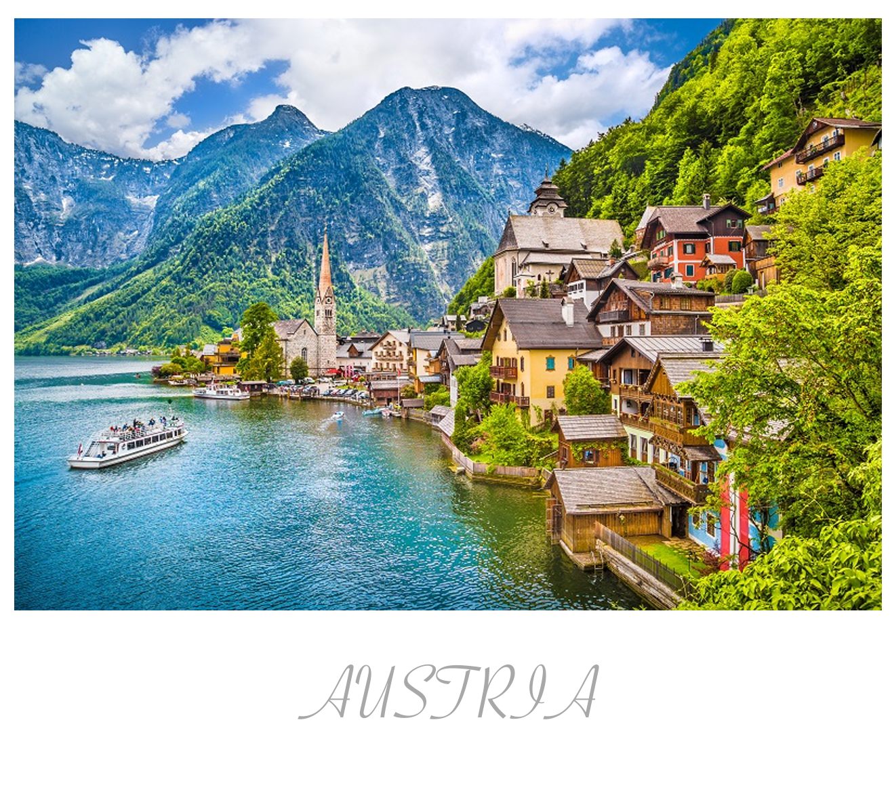
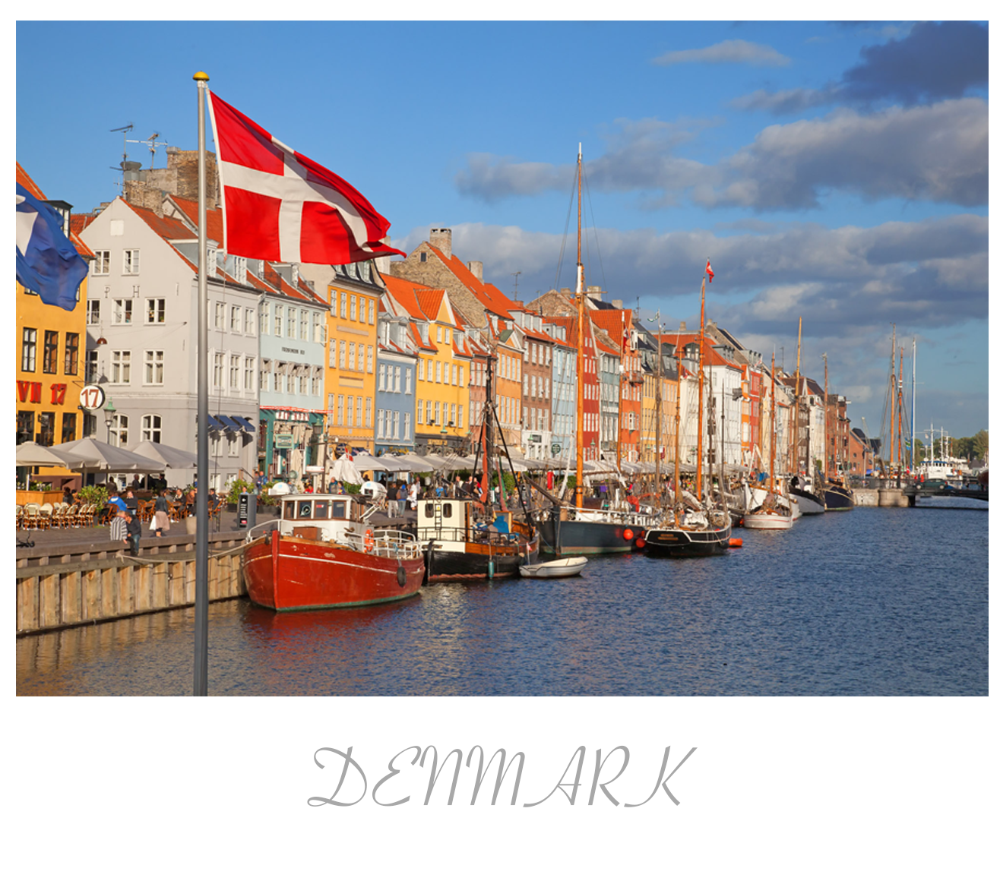
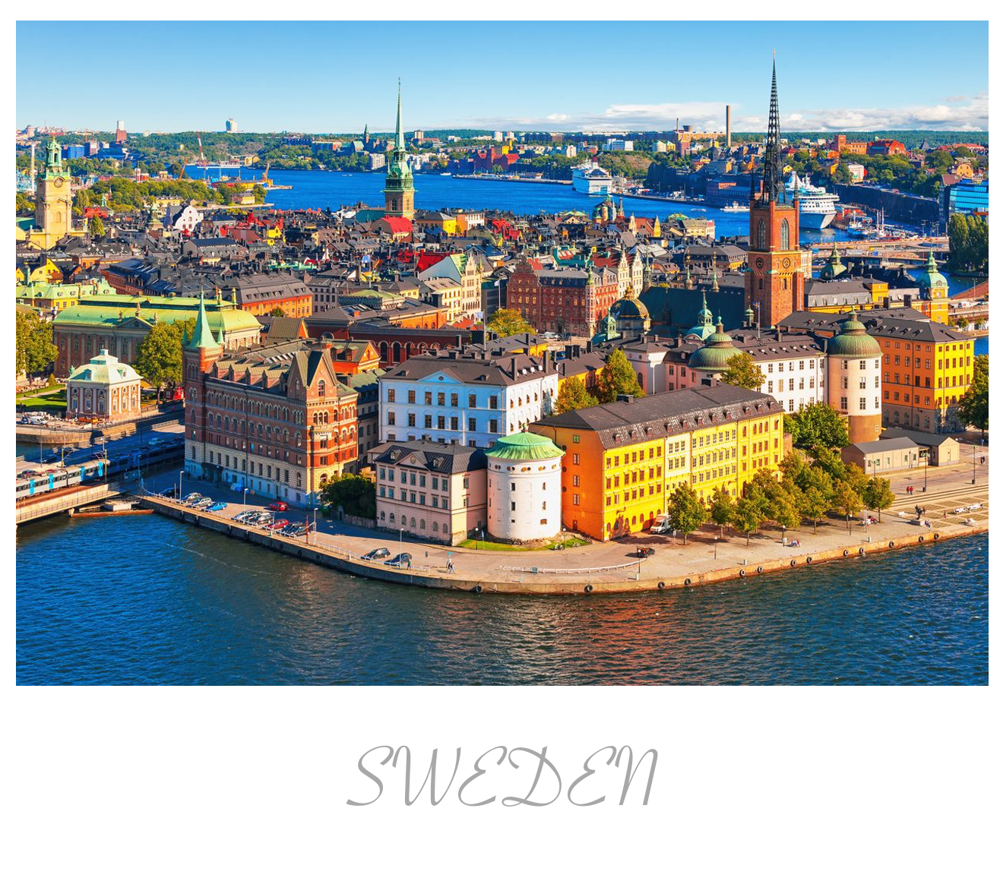
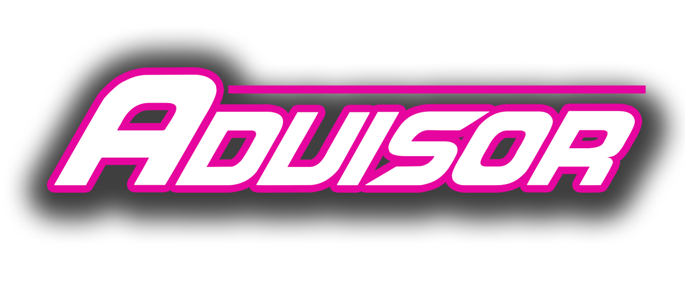

Copenhagen, Denmark On 2 September 2013, Danish public broadcaster DR announced that it had chosen Copenhagen as the host city for the 2014 contest. The contest was held at the former shipyard Refshaleøen, in the Hallerne, with the social networking hashtag as the motto. The location had been refurbished to accommodate the event, with the surrounding area transformed into Eurovision Island an Olympic Park-inspired complex housing the event venue, press centre, and other amenities.

2016 | จามาล่า – 1944 (ยูเครน)
จามาล่านักร้องหญิงชาวยูเครนเชื้อสายตาตาร์ไครเมียชนพื้นเมืองดั้งเดิมของคาบสมุทร
ไครเมีย ชนะการแข่งขัน ณ กรุงสตอกโฮล์ม ด้วยบทเพลง 1944 ที่เธอแต่งเองทั้งเนื้อร้องและทำนองซึ่งเธอแต่งเกี่ยวกับเหตุการณ์เนรเทศชาวตาตาร์ออกจากไครเมีย ในปีคริสตศักราชที่ 1944 และแทนที่ด้วยชาวรัสเซีย จนเป็นสาเหตุของข้อพิพาทวิกฤตไครเมียจนถึงทุกวันนี้
2015 | โมนส์ เซลเมลโลฟ – HEROES (สวีเดน)
โมนส์ เซลเมลโลฟ นักร้องหนุ่มสวีดิช คว้าชัยชนะ ณ กรุงเวียนนา ด้วยบทเพลง “HEROES” ที่กล่าวถึงความเป็นวีรบุรุษ เป็นได้ด้วยตัวคุณ ไม่จำเป็นต้องแสดงออกให้ผู้อื่นรู้แต่อย่างใด โดยในโชว์ของเขานั่นได้นำ คอมพิวเตอร์กราฟฟิคมาประกอบการแสดงจำนวนมาก
2014 | คอนชิต้า วูร์สต์ – RISE LIKE A PHOENIX (ออสเตรีย)
คอนชิต้า วูร์สต์ นักร้องเพศทางเลือกชาวออสเตรีย คว้าตำแหน่งผู้ชนะ ที่กรุงโคเปนเฮเกน ด้วยบทเพลง “RISE LIKE A PHOENIX” ที่กล่าวถึงบุคคลที่ไม่ย่อท้อต่อความพ่ายแพ้ เปรียบดั่งนกฟินิกซ์ที่เมื่อตายแล้วก็สามารถฟื้นจากกองเถ้าถ่านได้อีกครั้ง ซึ่งชัยชนะครั้งนี้แสดงให้เห็นถึงความยอมรับในเพศทางเลือกของชาวยุโรปนั่นกว้างขวางมากขึ้นแล้ว


This our site for people who love and enjoy listening a music,we would recomend this wedsite. We would like to recommend this,we wish you have a good time.Music can make you fly high all night long & make you feel good when you listened.

Stockholm, Sweden The construction to create what aims to be the best stage ever at the Eurovision Song Contest has begun. A team of 250 people - consisting of audio, video, light, generator and stage crews - are working day and night in the Globe Arena to complete most of the construction before the stand-in singers begin rehearsals.
Vienna, Austria The city of Vienna has started early to get prepared for the 2015 Eurovision Song Contest. Today, finally, some of the last preparations have been made at the Stadthalle, while delegations are arriving to have their first rehearsals tomorrow. Now we can also show you some more photos and information on the stage!